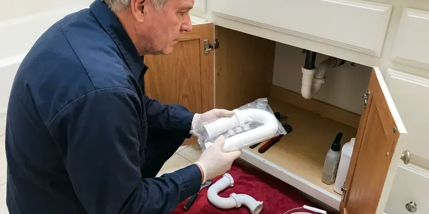

Faucet Replacement in San Rafael, CA
When your faucet leaks or breaks, FBL Plumbing is ready to help with reliable faucet replacement services throughout San Rafael, CA.
- Same-Day Faucet Replacement
- Upfront Pricing
- Quality Workmanship
- Old Faucet Removal Included
Professional Faucet Replacement and Installation in San Rafael, CA.
Our team is ready to help you choose and install the perfect faucet for your home.
Expert Faucet Replacement Services in San Rafael, CA
FBL Plumbing replaces old, corroded and leaking faucets with new models that work smoothly and resist mineral wear. We remove the old faucet, clean the sink deck of buildup and install the new faucet with fresh supply lines. The old faucet leaves with us.
Our expertise includes:
- Repair of Corroded Faucets and Pipes
- Matching new faucets to existing sink hole layouts
- Install all major faucet brands and styles.

Additional Bathroom Plumbing Services in San Rafael, CA
From toilets to showers, our bathroom plumbing team in San Rafael, CA handles repairs, installs, and upgrades with tidy, code-compliant work.


Customers
Why Choose FBL Plumbing for Faucet Replacement in San Rafael, CA?
Choosing FBL Plumbing means you get experienced plumbers who understand Northern California plumbing systems. We focus on durable installations that stand up to local water conditions and daily use.
- Clean Removal, We remove seized faucets without cracking porcelain or marring stone.
- Local Experts, Our team understands the specific plumbing needs and common issues in San Rafael.
- Code Compliance, All faucet replacements follow local plumbing codes and standards in Northern California, guaranteeing safety and proper function.
Citywide Coverage
FBL Plumbing provides complete faucet replacement services across every neighborhood of San Rafael. Whether you are in an older neighborhood or a newly developed area, our plumbers are equipped to reach you.
Experienced Team
We stay current on Moen, Delta, Kohler and Pfister product lines. That helps us recommend durable models and steer clear of ones with known issues.
Safety-First Approach
When replacing faucets, our plumbers always follow strict safety procedures and local Northern California building codes. This guarantees a safe installation that protects your home's plumbing system and water quality.
Trusted Certified San Rafael Plumbing Services Professionals
At FBL Plumbing, we take pride in providing certified plumbing services throughout San Rafael, CA. Backed by leading industry credentials, our experienced plumbers combine technical skill with genuine customer care. Whether it is repair, installation, or maintenance, we follow strict safety and quality standards to deliver lasting results you can trust.
Call Us Now PHCC Plumbing Contractor Recognition
PHCC Plumbing Contractor Recognition Better Business Bureau (BBB) Accreditation
Better Business Bureau (BBB) Accreditation Angi Certified Pro
Angi Certified Pro ISO 9001 Quality Management Certification
ISO 9001 Quality Management CertificationReliable Faucet Replacement Services in San Rafael, CA
Kitchen Faucet Replacement in San Rafael
A leaking or broken kitchen faucet can be a major inconvenience, wasting water and causing potential damage. Our plumbers specialize in replacing all types of kitchen faucets, including pull-down, pull-out, single-handle, and bridge styles. We can help you choose a durable replacement that matches your kitchen's style and provides reliable performance, considering factors like local water hardness that can affect how long a fixture lasts. We make sure of proper sealing and connection for a leak-free installation.

Faucet Replacement Cost Comparison in San Rafael, CA
A quality new faucet often costs $150 to $400 for the fixture, and installation adds about $150 to $300. Repeated cartridge repairs can add up fast, especially on older faucets with hard-to-find parts. We give you repair and replacement prices side by side. Many homeowners find replacement is the better long-run value.
Outdoor Faucet and Hose Bib Replacement in San Rafael, CA
Outdoor faucets, also known as hose bibs, are exposed to the weather and can crack if not properly maintained or insulated. Even in mild areas, wrapping irrigation backflow devices before a cold snap is cheap insurance against a surprise leak. FBL Plumbing offers replacement of damaged or leaky outdoor faucets in San Rafael, CA. We can install frost-proof models to help prevent future freeze damage, giving you reliable access to water for gardening and outdoor tasks.
Moen Faucet Replacement in San Rafael
Moen faucets are a common choice for many homeowners due to their style and warranty. If your Moen faucet is leaking, corroded, or simply outdated, FBL Plumbing offers professional replacement services. We understand the various valve types and cartridges used in Moen products, making the replacement process smooth and quick. We will make sure your new Moen faucet works the way it should and provides years of trouble-free use.
Commercial Faucet Replacement in San Rafael
Businesses in San Rafael rely on working plumbing, and a broken commercial faucet can disrupt operations. We provide specialized faucet replacement services for commercial kitchens, restrooms, and utility areas. Our plumbers are equipped to handle heavy-duty, ADA-compliant, and specialized commercial fixtures, ensuring downtime to a minimum for your business. We focus on durable, high-traffic solutions that meet commercial code requirements.
Cost-Effective Faucet Replacement Options in San Rafael, CA
We understand that budget is a consideration for any home improvement. FBL Plumbing offers cost-effective faucet replacement solutions without cutting corners on quality. We can recommend various faucet options, from budget-friendly utility models to premium designer fixtures, providing clear pricing upfront. Our goal is to give you the best value and a long-lasting replacement that fits your needs and budget here in San Rafael, CA.
Emergency Faucet Replacement in San Rafael, CA
A burst faucet or a severe, unfixable leak can quickly become an emergency, threatening water damage to your home. FBL Plumbing offers emergency faucet replacement services throughout San Rafael, CA to address urgent situations. Our rapid response team will quickly assess the problem, shut off the water if necessary, and replace the faulty faucet to restore your plumbing and prevent further damage. Do not let a major leak turn into a disaster.

Corroded Faucet Replacement in San Rafael
Mineral scale and corrosion can make faucets stiff, leaky and hard to clean. When the faucet body or base is corroded, cartridge repairs will not hold up. We remove the old faucet, even when nuts are seized, and install a new one with ceramic disc cartridges. Ceramic cartridges hold up better in hard water than older rubber washer designs.
Faucet Replacement Near Me in San Rafael, CA
Searching for faucet replacement near me usually means you want it fixed quickly. FBL Plumbing offers same-day faucet replacement in many cases. We bring the tools to remove even stubborn old faucets.
Our plumbers are local to San Rafael and know the fixtures common in area homes. We work cleanly, explain your options and give a flat price up front. Every replacement is backed by our workmanship guarantee.
FBL Plumbing at a Glance
- Fully licensed plumbing team covering San Rafael, CA
- 24/7 emergency service with same-day scheduling
- Upfront, flat-rate pricing before work begins
- 4.8-star rated by 834+ Northern California customers
San Rafael Map
San Rafael Information
- Population
- 59,555
- Area codes
- 415/628/510
- Service area
- San Rafael and communities within 40 miles
- Nearby
- Novato, Richmond, Berkeley, Vallejo
Faucet replacement is important in San Rafael, CA homes because worn fixtures waste water and can leak into cabinets, so efficient, leak-free fixtures are key for preventing waste and damage.
Expert Services
Trust our professionals for reliable FBL Plumbing solutions in San Rafael, CA.
Our Specialized Plumbing Services in San Rafael, CA
At FBL Plumbing, we provide a complete range of plumbing services across San Rafael, CA. From leak detection to full system installations, our team ensures fast, precise, and affordable service for both residential and commercial properties. Explore our core services below:


How Our Faucet Replacement Service Works in San Rafael, CA
FBL Plumbing follows a clear, efficient process for every faucet replacement, ensuring quality results.
Request a Quote
Contact us at (669) 319-2034 to describe your faucet issue and schedule an appointment. We will gather basic details about your current faucet and your replacement needs.
On-Site Assessment
Our plumber will visit your San Rafael home to inspect your existing faucet, plumbing, and the installation area. We will discuss your options for new fixtures.
Professional Installation
Once you choose your new faucet, our skilled plumber will carefully remove the old unit and install the new one. We ensure all connections are sealed, and the faucet is tested for proper operation and leaks.
Frequently Asked Questions About Faucet Replacement in San Rafael
Faucet replacement labor typically runs $150 to $350. Including a quality mid-range faucet, most jobs total $300 to $750. Touchless or high-end faucets can bring the total to $800 or more.
While some basic faucet replacements can be a DIY project, it is often best to hire a professional. Incorrect installation can lead to leaks, water damage, or even issues with your home's water pressure. Our plumbers ensure proper sealing and connection.
Water hardness in Northern California varies a lot by source, with snowmelt-fed systems running soft and many inland groundwater systems running hard. Hard water can lead to mineral deposits, or limescale, building up inside faucets. This buildup can reduce water flow, cause drips, and corrode internal components over time. Regular maintenance or choosing faucets designed for hard water can help them last longer.
Replace a faucet if it leaks after repairs, the body is corroded or cracked, parts are discontinued or it simply no longer fits your kitchen or bath.
If your shutoff valves are old, stiff or corroded, yes. Replacing them during a faucet swap is inexpensive and prevents future leaks.
New faucets typically carry manufacturer warranties, often lifetime on cartridges for major brands. We also guarantee our installation workmanship.
Faucets with ceramic disc cartridges from Moen, Delta, Kohler and Grohe tend to last well. Keeping aerators clean and using a water softener also help.
In many cases, yes. We carry popular faucet models on our trucks, and we can install a faucet you have already bought.
What People Are Saying About Our Plumbing Experts?

James P.
Our commercial plumbing system had a leak under the sink, and FBL Plumbing handled it professionally. The plumbers arrived quickly and restored everything without disruption to our customers.
Commercial Plumbing · Berkeley, CA
Patricia H.
We had a slab leak that two other companies could not find. FBL Plumbing located it in under an hour, explained our options, and the price matched the quote to the dollar.
Slab Leak Repair · Petaluma, CARobert G.
The trenchless sewer replacement saved our front yard. They walked us through the camera inspection footage first so we knew exactly what we were paying for.
Sewer Line Replacement · Berkeley, CA
Daniel K.
A pipe burst at 11 pm and they actually answered. The plumber showed up within the hour, shut everything down, and had us back to normal the next morning. Could not ask for more.
Emergency Plumbing · Berkeley, CA
Sofia M.
Two new toilets installed in one visit, no mess left behind, and the tech even adjusted a faucet he noticed was dripping. Fair pricing and really friendly.
Toilet Installation · Berkeley, CA
Mark T.
When our office needed drain cleaning, FBL Plumbing provided quick, reliable service. The plumber arrived on time and made sure every drain flowed perfectly before leaving. Very satisfied.
Drain Cleaning · Vallejo, CA